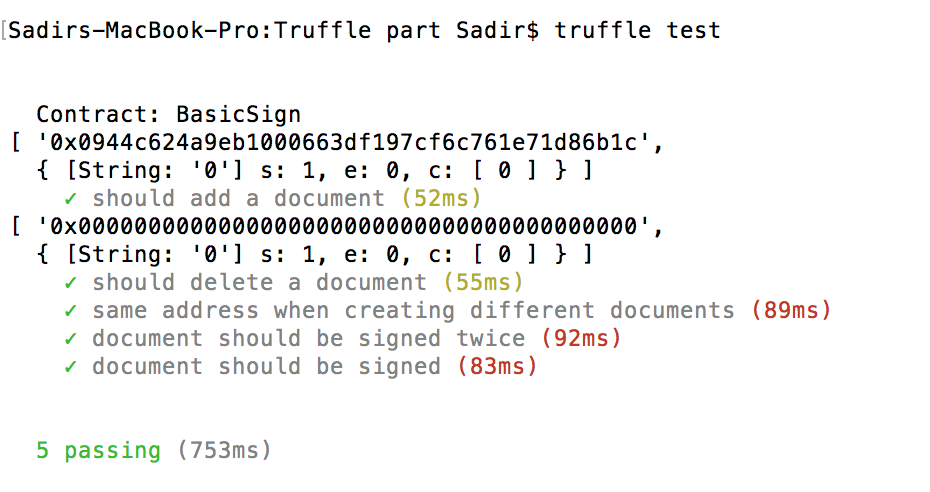
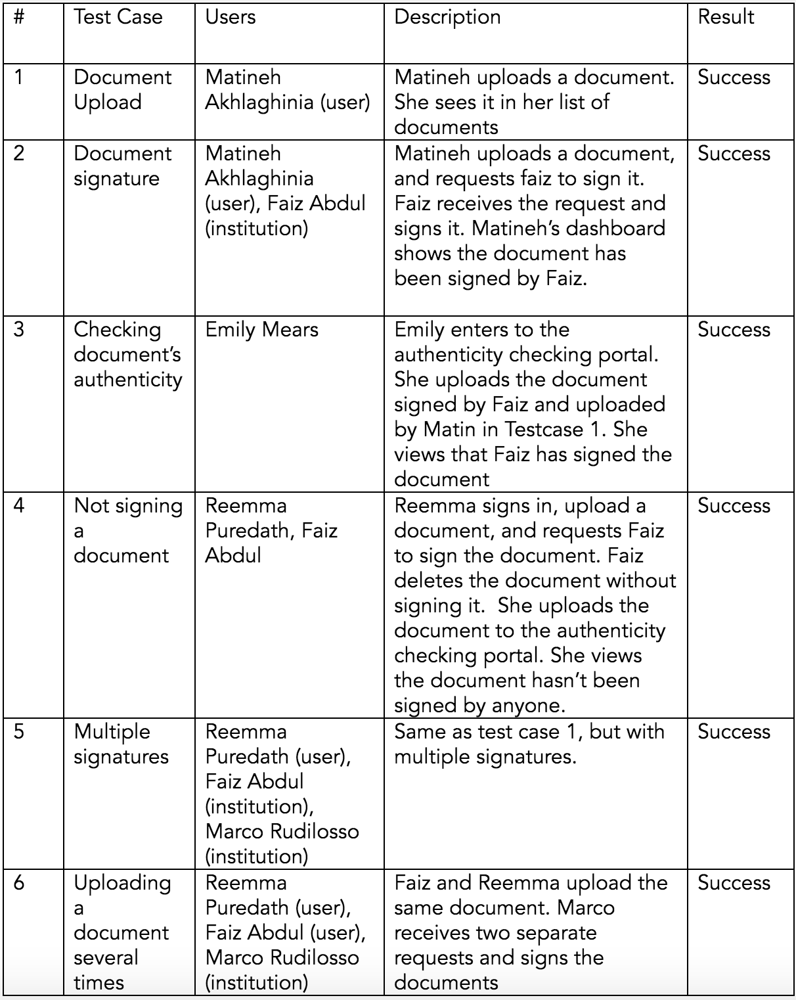

Testing
a.Unit and integration testing
To perform our testing, we used tools that are built in the frameworks we are already using.
Smart contracts
Truffle advocates the use of Mocha and Chai for unit tests of smart contracts [1]. We have written tests to confirm our smart contracts behaves as expected, and this has helped find some bugs, related to signing a document twice for example. In the last stage, all the tests passed.
[1] https://truffle.readthedocs.io/en/latest/getting_started/testing/
Example of a set of tests:
Model / Database<
Chai was also used to assert that our queries are working well.
Integration testing
Because our web app’s functions directly integrates different components (database queries, web3 calls to testRPC…), it was possible to do some integration testing with chai as well. We faced some difficulties because of the client/server strict separation with meteor, and hence some functionalities couldn’t be tested.
b.User acceptance testing
User feedback
Matineh Akhlaghina, Computer Science student:
'The app is very useful for me, as I've wasted a lot of time to get my document notarised. It looks quite straightforward, and fits well with the blockchain technology's aim. I would definitely use it.''
Joseph Sapharradoj, Mechanical Engineering student:
'The website looks nice and appealing, and the features would really helped me. I'm not sure whether this can be implemented, but I would suggest to have email notification in the future.''
Laetitia Leven, Management Science student:
'The idea is simple yet extremely helpful. It actually made me understand blockchain. Regarding the web app itself, it is very simple and easy to understand, which means that non-technical users won;t suffer to know what;s happening.''
Client feedback